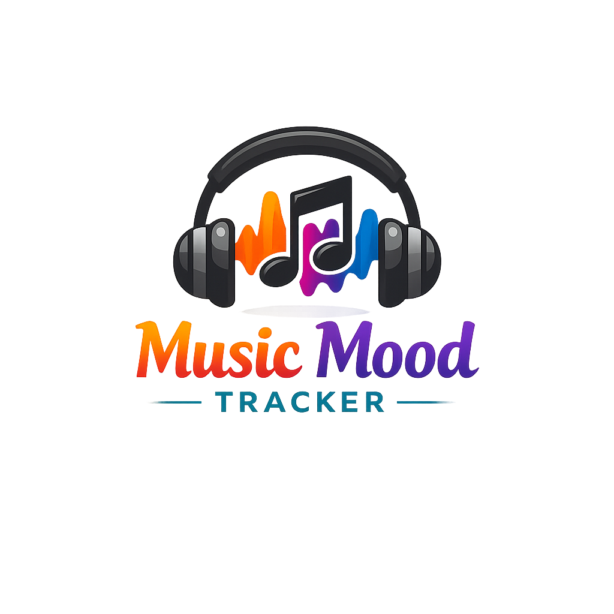

A music tracker where users can add songs or albums they want to listen to, organize them by mood or genre, and mark whether they have listened to them yet.
The purpose of this app is to help users organize, keep track, and discover their favorite music.
The intended audience is people who enjoy finding new music and want a simple way to organize songs, albums, or artists they want to remember. This app is especially useful for students or casual listeners who often get song recommendations from friends or social media.
JavaScript will be used to let users add songs or albums to a music list. Each item will be stored as an object inside an array, and from there the user will be able to filter the list by status, such as listened or not listened, and possibly by genre or mood. JavaScript will update the page dynamically when the user submits the form, clicks buttons, or changes filters.
Start with an empty music list. When the user adds a song: Get the song title from the form. Get the artist name from the form. Get the genre from the form. Get the mood from the form. Get the status from the form. Check if the title and artist are filled in. If the form is filled out: Create a new music item. Add it to the music list. Clear the form. Show the updated music list on the page. When the music list is shown: Go through each song in the list. Show the song title, artist, genre, mood, and status. Add a button so the user can mark the song as listened. When the user clicks the listened button: Change that songs status to listened. Show the updated music list again. When the user uses a filter: Check which filter was selected. If the filter is all, show every song. If the filter is listened, only show songs that have been listened to. If the filter is not listened, only show songs that have not been listened to.


Main Background: Dark Charcoal #2B2B2B Card Background: Deep Graphite #1A1A1F Primary Accent: Neon Orange #FF7A00 Secondary Accent: Purple #8F2BFF Tertiary Accent: Cyan/Teal #00A6C8 Text: Soft White #F5F5F5